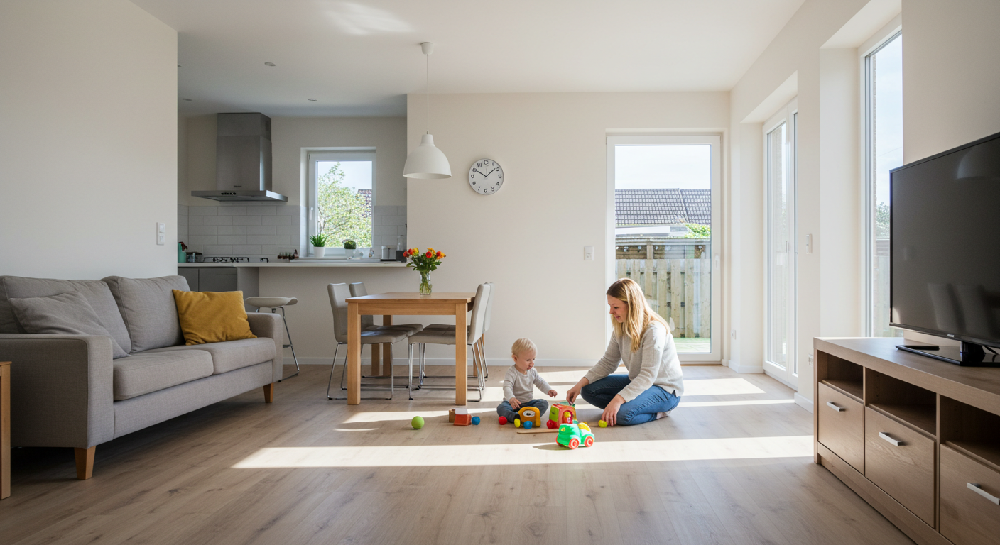
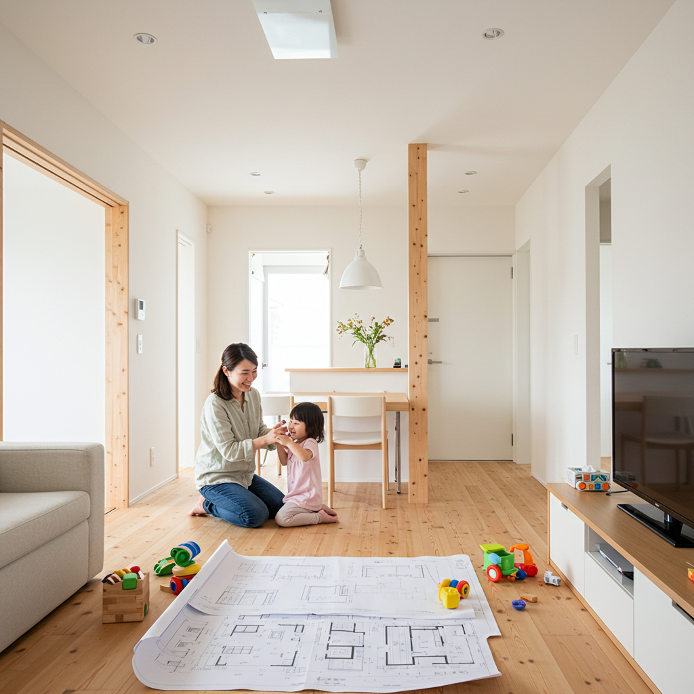
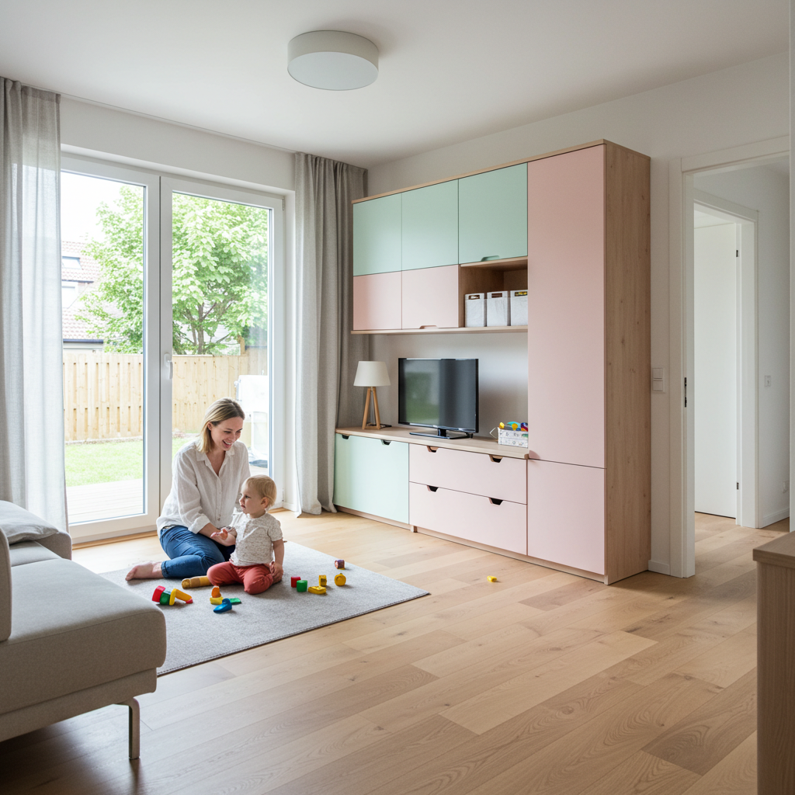
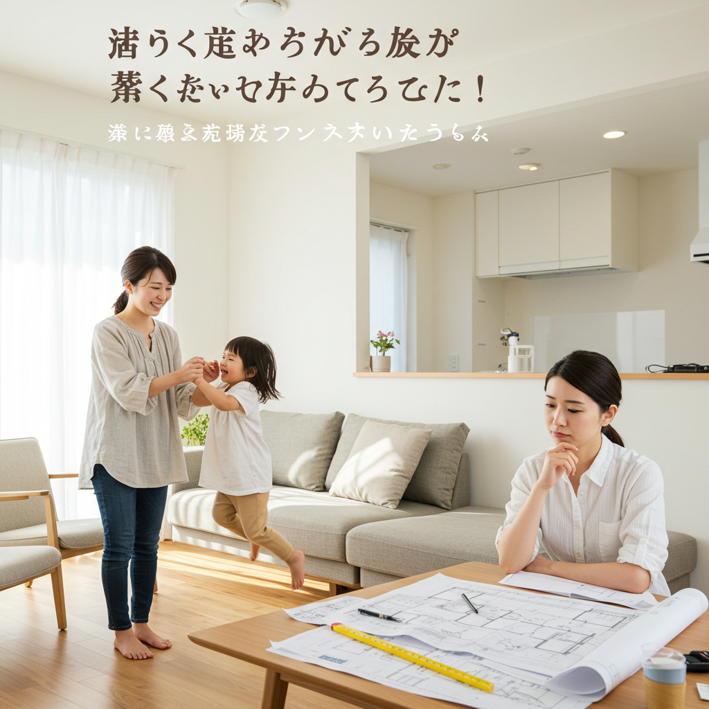
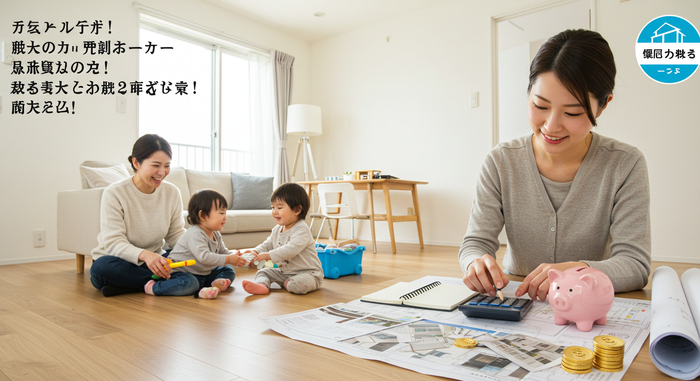
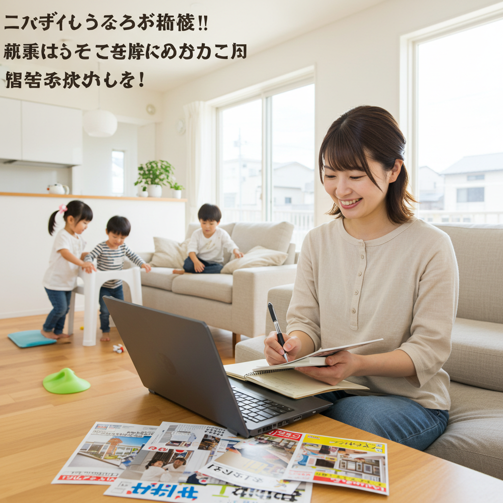
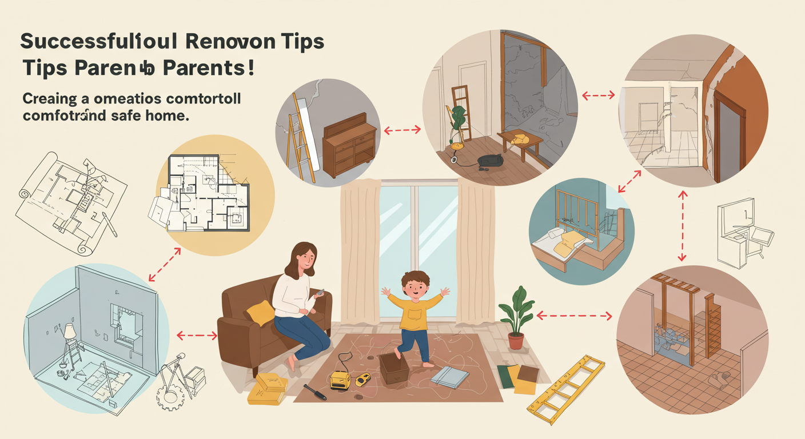
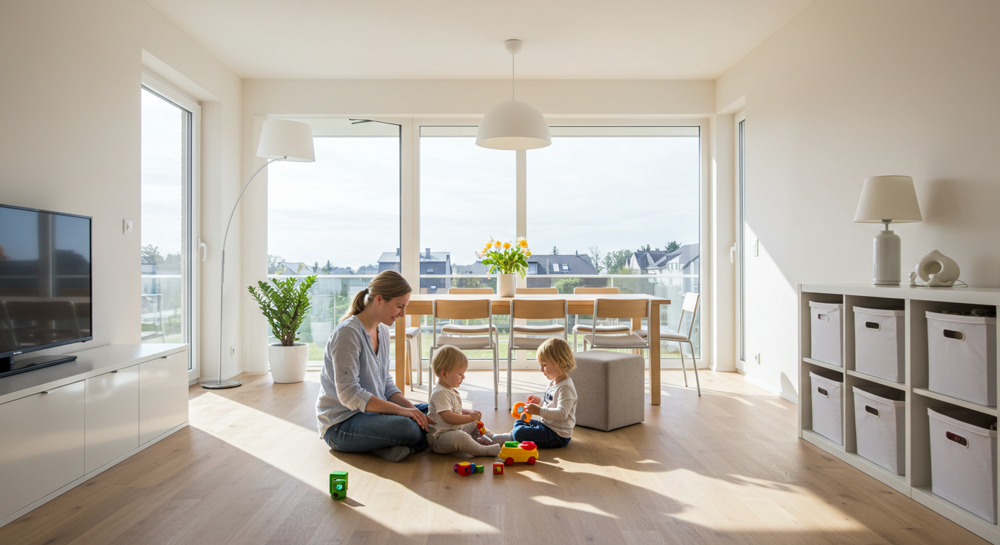

子育てママのリフォーム成功術！快適で安全な家づくり

導入
毎日、子育てに家事に、本当にお疲れ様です。お子様の元気な声が響く家は、幸せに満ち溢れていますが、同時に「もう少しこうだったらな…」と感じる瞬間も多いのではないでしょうか。
「子供のおもちゃがリビングに溢れて、片付けてもすぐに散らかってしまう…」
「キッチンで料理をしていると、ハイハイする我が子の姿が見えなくてヒヤヒヤする…」
「洗濯物を干して、取り込んで、畳んで、しまう…この家事動線、どうにかならないかしら…」
「子供が走り回るたびに、階下への足音が気になってしまう…」
子育て中のご家庭では、お子様の成長とともに、住まいに対する悩みや要望が次々と生まれてきます。子供が生まれる前は快適だったはずの家が、いつの間にか少し手狭に感じられたり、危険な場所に見えてきたり。それは、ご家族の暮らしが新しいステージに進んだ証拠でもあります。
そんな子育て世代の悩みを解決し、家族みんながもっと笑顔で、もっと快適に暮らせるようにするための有効な手段が「リフォーム」です。
リフォームと聞くと、なんだかとても大掛かりで、費用も時間もかかりそう…と少し身構えてしまうかもしれません。でも、大丈夫です。リフォームは、家全体を建て替えるような大工事だけではありません。壁紙を一枚張り替えること、収納棚を一つ取り付けること、そんな小さな工夫から、間取りを大きく変更する大規模なものまで、ご家庭の悩みや予算に合わせて、様々な形で実現することができます。
大切なのは、今の暮らしの「ちょっとした不便」や「こうなったらいいな」という想いを、そのままにしないこと。その想いを一つひとつ丁寧に拾い上げて、家族の暮らしにぴったりの形にしていくのが、子育てママのためのリフォームです。
この記事では、子育て真っ最中のママたちが、リフォームで後悔しないために知っておきたい大切なポイントを、一つひとつ丁寧にご紹介していきます。快適な家づくりのためのリフォームの種類から、先輩ママたちの素敵な実例、気になる費用や業者の選び方まで、あなたの「知りたい」に寄り添ってお伝えします。
リフォームは、単に家を綺麗にしたり、便利にしたりするだけのものではありません。それは、家族の安全を守り、ママの家事負担を軽くし、子供たちの健やかな成長を育むための、未来への大切な投資です。そして何より、ママ自身の心がふっと軽くなり、毎日をもっと楽しめるようになるための、最高のプレゼントになるはずです。
さあ、一緒に、あなたとご家族にとって最高の「我が家」を創るための第一歩を踏み出してみませんか？
子育てママのリフォーム、快適な家づくりの種類

子育て中のママがリフォームを考えるとき、その目的は多岐にわたります。漠然と「もっと暮らしやすくしたい」と思っていても、具体的にどこから手をつければ良いのか迷ってしまいますよね。ここでは、子育て世帯が抱える代表的な悩みを解決するためのリフォームの種類を４つのテーマに分けて、具体的にご紹介します。ご自身の暮らしと照らし合わせながら、「うちにはこれが必要かも！」というヒントを見つけてみてください。
１．収納を増やすリフォーム
お子様が生まれると、驚くほど物が増えていきます。日に日にサイズが大きくなる洋服、おむつやミルクなどのストック品、月齢に合わせたおもちゃ、絵本、そして成長とともにもらう記念の品々。さらに幼稚園や小学校に入学すれば、制服や体操服、教科書、学用品、工作の作品など、その量は増える一方です。
「片付けても片付けても、すぐに物で溢れてしまう…」そんなお悩みは、収納スペースが現在の家族の物量に合っていないサインかもしれません。収納を増やすリフォームは、そんなお悩みを根本から解決し、すっきりと片付いた快適な空間を取り戻すための第一歩です。
ウォークインクローゼット・ファミリークローゼットの新設・拡張
家族全員の衣類を一か所にまとめて収納できるファミリークローゼットは、子育て世帯に絶大な人気を誇ります。洗濯物を取り込んだ後、各部屋にしまいに行く手間が省け、家事動線が劇的に改善されます。子供が自分で服を選んだり、片付けたりする習慣を身につけるきっかけにもなりますね。既存のクローゼットを拡張したり、使っていない部屋や納戸を改装したりすることで実現可能です。
壁面収納の造作
リビングや子供部屋の壁一面を収納スペースに変えるリフォームです。テレビボードと一体化した壁面収納は、散らかりがちなDVDやおもちゃ、ゲーム機などをすっきりと隠すことができます。また、子供部屋に本棚を兼ねた壁面収納を造作すれば、増え続ける絵本や図鑑、教科書を美しく整理できます。天井までの高さを有効活用できるため、収納力が格段にアップするのが魅力です。
シューズクローク（土間収納）の設置
玄関周りは、ベビーカー、三輪車、外遊び用のおもちゃ、傘、パパのゴルフバッグなど、家の中に持ち込みたくないもので溢れがちです。シューズクロークがあれば、靴はもちろん、これらのアイテムをまとめて収納できます。コートや上着を掛けるスペースを作っておけば、外から帰ってきてすぐに上着を脱ぎ、花粉やウイルスを室内に持ち込むのを防ぐ効果も期待できます。
デッドスペースの有効活用
階段下や廊下の突き当り、部屋の隅など、家の中には意外と活用されていない「デッドスペース」が存在します。こうした空間に棚やカウンターを造作するだけで、立派な収納スペースに生まれ変わります。例えば、階段下は子供の秘密基地兼おもちゃ収納にしたり、廊下に薄型の本棚を設置したりと、アイデア次第で可能性は無限に広がります。
収納リフォームのポイントは、「どこに」「何を」「どれくらい」収納したいのかを具体的に考えることです。そして、子供の成長に合わせて収納方法を変えられるよう、棚板が可動式になっているなど、柔軟性のあるプランを選ぶことをお勧めします。
２．子供の安全対策リフォーム
お子様にとって、家は世界で一番安心できる場所であるはずです。しかし、大人の目線では気づきにくい危険が、実は家の中のあちこちに潜んでいます。好奇心旺盛な子供たちは、時に予測不可能な行動をとるもの。転んだり、指を挟んだり、高いところから落ちたり…。そんなヒヤリとする瞬間を未然に防ぎ、ママが安心して家事をしたり、少しだけ目を離したりできる環境を整えるのが、安全対策リフォームです。
床材の変更
ハイハイを始めた赤ちゃんや、走り回るのが大好きな子供にとって、床は最も身近な存在です。硬くて滑りやすいフローリングは、転倒した際に大きなケガにつながる可能性があります。クッション性の高いコルク材やカーペット、滑りにくい加工が施されたフローリングなどに変更することで、万が一の衝撃を和らげ、転倒のリスクを軽減できます。また、食べこぼしや飲みこぼしに備えて、掃除がしやすく、防水・防汚加工が施された床材を選ぶと、ママのお手入れもぐっと楽になります。
建具・家具の安全対策
部屋の角や家具の角は、ちょうど子供の頭の高さにあることが多く、ぶつかると大きな事故につながりかねません。リフォームの際に、壁の出隅（角）を丸くする「Rコーナー」加工を施したり、造作家具の角を丸く面取りしたりする工夫が有効です。また、子供が勢いよくドアを閉めて指を挟んでしまう事故を防ぐため、ゆっくりと閉まるソフトクローズ機能付きのドアや引き戸への交換も人気です。
階段・窓の転落防止対策
階段は、子供にとって特に危険な場所の一つです。滑り止めの設置はもちろん、子供が一人で上り下りできないように、階段の上下にベビーゲートを設置できるような設計にしておくと安心です。手すりの間隔が広い場合は、子供がすり抜けて転落する危険があるため、ネットを張ったり、縦格子を追加したりする対策も検討しましょう。窓にも、子供が勝手に開けられないようにするストッパーを取り付けたり、転落防止用の手すりを設置したりすることが重要です.
コンセント・配線の安全対策
子供はコンセントの穴に指や物を入れたがるものです。感電事故を防ぐため、使わないコンセントにはカバーをするのが基本ですが、リフォームの際には、子供の手が届きにくい高い位置にコンセントを移設したり、シャッター付きの安全コンセントに交換したりすることをお勧めします。また、テレビや家電の長いコードは、子供が足を引っかけて転倒する原因になります。壁の内部に配線を通したり、壁際に配線モールを設置したりして、コードが床を這わないように工夫しましょう。
シックハウス対策
建材や家具に含まれる化学物質が原因で起こるシックハウス症候群は、体の小さい子供ほど影響を受けやすいと言われています。リフォームで使用する壁紙や接着剤、塗料、建材などは、ホルムアルデヒドの放散量が少ない「F☆☆☆☆（フォースター）」規格のものを選ぶようにしましょう。さらに、無垢材のフローリングや珪藻土、漆喰の壁など、調湿効果や消臭効果のある自然素材を積極的に取り入れることで、家族みんなが健やかに過ごせる、空気のきれいな住まいを実現できます。
３．家事ラク動線改善リフォーム
子育て中のママの毎日は、まさに時間との戦いです。料理をしながら洗濯機を回し、子供の相手をしながら掃除をする…。「ながら家事」をいかに効率よくこなすかが、日々のゆとりを生み出す鍵となります。家事動線とは、家の中で家事をする際に人が移動する経路のこと。この動線がスムーズでないと、無駄な動きが増え、時間も体力も消耗してしまいます。家事ラク動線改善リフォームは、そんなママの負担を劇的に軽くしてくれる、魔法のようなリフォームです。
キッチン中心の回遊動線
「回遊動線」とは、家の中を行き止まりなく、ぐるぐると回れる動線のことです。特にキッチンを中心に回遊できる間取りは、家事効率を格段にアップさせます。例えば、「キッチン→パントリー→洗面脱衣室→物干しスペース→ファミリークローゼット→キッチン」といった動線が繋がっていれば、料理の合間に洗濯をしたり、乾いた服をすぐにしまったりといった一連の流れが非常にスムーズになります。壁を一枚取り払ったり、ドアの位置を変えたりするだけで、驚くほど動きやすい空間が生まれることもあります。
キッチンから洗面・浴室へのスムーズな連携
料理と洗濯は、ママが同時にこなすことの多い家事の代表格です。キッチンと洗面脱衣室が隣接している間取りは、この二つの家事を効率的に行う上で非常に有利です。リフォームで間取りを変更できるなら、ぜひ検討したいポイントです。また、汚れた服で帰ってきた子供を、玄関からリビングを通らずに直接お風呂場へ誘導できる動線も、家をきれいに保つ上でとても役立ちます。
「洗う・干す・しまう」を一か所に集約
洗濯は、「洗う→干す→取り込む→畳む→しまう」という工程の多い家事です。この一連の作業を行う場所がバラバラだと、重い洗濯物を持って家の中を何度も行き来することになり、大きな負担となります。洗面脱衣室に室内干しスペースや乾燥機を設置し、さらに隣にファミリークローゼットを設けることで、この全ての工程を一か所で完結させることができます。雨の日や花粉の季節も気にせず洗濯ができ、家事の時短に大きく貢献します。
パントリー（食品庫）の設置
週末にまとめ買いをしたり、災害用の備蓄をしたりと、子育て世帯はストックしておきたい食品や日用品が多いものです。大容量のパントリーがあれば、キッチン周りをすっきりと保つことができます。どこに何があるか一目でわかるように、棚の奥行きを浅くしたり、可動棚にしたりする工夫がおすすめです。キッチンからのアクセスが良い場所に設けるのが理想的です。
家事動線リフォームは、間取りの変更を伴うことが多いため、比較的大規模な工事になることもあります。しかし、その効果は絶大です。毎日の無駄な動きがなくなることで生まれる時間と心のゆとりは、何物にも代えがたい価値があると言えるでしょう。
４．リビング快適性向上リフォーム
リビングは、家族が一番長く過ごす場所。食事をしたり、テレビを見たり、子供が遊んだり、時には宿題をしたり…。家族団らんの中心となるリビングが快適であれば、家全体の満足度も大きく向上します。子供の成長やライフスタイルの変化に合わせて、リビングの機能を見直し、誰もが心地よく過ごせる空間へとアップデートするのが、リビング快適性向上リフォームです。
キッズスペースの確保
子供が小さいうちは、どうしてもリビングがおもちゃで散らかりがちです。そこで、リビングの一角にキッズスペースを設けることをお勧めします。リビング続きの和室をキッズスペースとして活用したり、リビングの隅にクッション性の高いマットを敷いたりするだけでも、「ここは子供の場所」というゾーニングができます。おもちゃの収納棚を近くに設置すれば、子供が自分で片付ける習慣も身につけやすくなります。床に一段小上がりを設けて畳スペースにするのも、空間にメリハリが生まれて素敵ですね。
スタディコーナーの造作
子供が小学生になると、宿題をする場所が必要になります。子供部屋に学習机を用意するのも良いですが、低学年のうちは親の目の届くリビングで勉強させたいと考えるご家庭も多いでしょう。そんな時に活躍するのが、リビングやダイニングの一角に設けるスタディコーナーです。壁に向かってカウンターデスクを造作すれば、省スペースで集中できる空間が生まれます。親子で並んで使えるように、少し長めのカウンターにするのも良いアイデアです。パソコン作業や読書など、家族みんなで使える多目的なスペースになります。
床暖房の導入
冬の寒い日、床からの冷気は大人にとっても辛いものですが、床に近い場所で過ごすことが多い赤ちゃんや小さな子供にとっては、より深刻な問題です。床暖房を導入すれば、足元からじんわりと部屋全体を暖めることができ、エアコンのように空気が乾燥したり、ホコリが舞い上がったりする心配もありません。子供が床に座り込んだり、寝転がったりしても安心。家族みんなが快適に冬を過ごせるようになります。
汚れや傷に強い内装材の採用
子供の食べこぼし、飲みこぼし、お絵かきによる落書き、おもちゃによる傷…。子育て中の家の壁や床は、常に汚れや傷の危険に晒されています。リフォームの際には、デザイン性だけでなく、機能性にも優れた内装材を選ぶことが重要です。壁紙は、汚れが拭き取りやすいフィルム加工のものや、傷に強い強化タイプのものがお勧めです。床材も、防水・防汚・耐傷性に優れたフローリングやクッションフロアを選ぶと、日々の掃除が格段に楽になり、ママのストレスも軽減されます。
コミュニケーションが生まれる間取りへ
キッチンで料理をしているママが、リビングで遊ぶ子供の様子を見守れる対面式キッチンへの変更は、子育て世帯の定番リフォームです。壁付けキッチンを対面式に変えるだけで、家族のコミュニケーションは格段に増え、ママの安心感も高まります。また、リビングと隣の部屋を仕切る壁を取り払い、広々とした一つのLDK空間にするリフォームも人気です。空間に繋がりが生まれることで、家族が自然とリビングに集まり、会話が弾む、明るく開放的な住まいが実現します。
ママに嬉しいリフォーム実例

リフォームの種類がわかったところで、次は具体的な成功事例を見ていきましょう。先輩ママたちがどのような工夫で、子育ての悩みを解決し、快適な住まいを手に入れたのか。ここでは、特に「なるほど！」と思えるような、ママに嬉しいリフォームの実例を３つご紹介します。ご自身の家づくりのヒントにしてみてください。
１．デッドスペース活用収納術
「収納は欲しいけれど、そのために部屋を狭くしたくない…」これは多くの人が抱えるジレンマです。しかし、家の中をよく見渡してみると、使われていない「もったいない空間」が意外とたくさんあるものです。デッドスペースを巧みに活用した収納リフォームは、部屋の広さを犠牲にすることなく、収納力を劇的にアップさせることができます。
事例：階段下を「キッズライブラリー＆秘密基地」に
あるご家庭では、リビングにある階段下の、ただ壁になっているだけの空間に悩んでいました。奥まっていて薄暗く、掃除機を置くくらいしか使い道がなかったそうです。そこで、この階段下の壁をくり抜き、オープンスペースにリフォームしました。
まず、壁面にぴったりと収まるサイズの絵本棚を造作。子供の目線の高さに合わせた棚は、表紙が見えるようにディスプレイできるタイプにしたことで、子供が自分で好きな絵本を選びやすくなりました。棚に入りきらない大きめの図鑑やおもちゃは、キャスター付きの収納ボックスに入れて、棚の下のスペースにすっきりと収めました。
さらに、奥のスペースには小さなデスクと椅子を置き、壁には可愛らしい照明を取り付けました。すると、そこはまるで子供だけの「秘密基地」のような空間に。お絵かきをしたり、絵本を読んだり、お気に入りの場所に様変わりしました。以前はただの壁だった場所が、子供の創造性を育む特別なスペース兼、散らかりがちな絵本やおもちゃの見事な収納場所になったのです。
このリフォームのポイントは、ただ収納を作るだけでなく、子供が喜んで使いたくなるような「居場所」としての付加価値を持たせたことです。デッドスペースだった階段下が、家族の笑顔が生まれるお気に入りのコーナーへと生まれ変わった素晴らしい事例です。
その他のデッドスペース活用アイデア
- 廊下の壁面をニッチ収納に： 廊下の壁の厚みを活用して、壁をへこませた飾り棚（ニッチ）を作るリフォームです。家族の写真や子供の作品を飾るディスプレイスペースとして、また、鍵や印鑑などを置く小物置き場として活躍します。奥行きは浅くても、空間のアクセントになり、収納力もアップします。
- キッチンの吊り戸棚下を活用： 吊り戸棚の下に、アイアンバーやスパイスラックを取り付けるだけの簡単なリフォームです。よく使うキッチンツールや調味料を吊り下げて収納することで、調理中の作業効率が格段に上がります。
- 洗面台と壁の隙間に収納棚を造作： 洗面台と壁の間にできてしまった中途半端な隙間。ここに幅に合わせたスリムな収納棚を造作すれば、タオルや洗剤、化粧品のストックなどを収納するのに最適なスペースになります。
このように、ほんの少しの空間も見逃さずに活用することで、家の収納力は大きく向上します。まずはご自宅のデッドスペースを探すことから始めてみてはいかがでしょうか。
２．子供の安全を守る工夫
子供の安全は、何よりも優先したいこと。しかし、四六時中子供から目を離さずにいることは不可能です。リフォームによって「未然に事故を防ぐ」仕組みを家の中に作っておくことは、子供を守るだけでなく、ママの精神的な負担を軽減することにも繋がります。
事例：キッチンへの動線を考えたベビーゲート設置リフォーム
対面キッチンに憧れてリフォームしたあるママ。しかし、実際に暮らし始めると、ハイハイを始めた赤ちゃんが、調理中のキッチンに侵入してきてしまうという新たな悩みが生まれました。火や刃物があり、油も飛び散るキッチンは、赤ちゃんにとって危険がいっぱいです。市販のベビーゲートを設置しようにも、キッチンの入り口がオープンな間取りだったため、突っ張る壁がなく、設置が困難でした。
そこで、このご家庭では追加のリフォームを実施。キッチンの入り口の片側に、幅30cmほどの「袖壁（そでかべ）」を一枚造作しました。たった一枚の壁を追加しただけですが、これにより市販の突っ張り式ベビーゲートがしっかりと設置できるようになったのです。
さらに、その袖壁のキッチン側には、マグネットが付くホーローパネルを貼りました。これにより、子供の描いた絵や、保育園からのお知らせプリントなどを貼る伝言板スペースが生まれ、デッドスペースになりがちな壁が有効活用されました。
このリフォームのポイントは、大規模な間取り変更をすることなく、小さな工夫で大きな安全性を確保した点です。ベビーゲートが必要な時期は限られています。将来ゲートが不要になった時も、袖壁は圧迫感がなく、伝言板として長く使い続けることができます。子育ての一時期の悩みを、長期的にも価値のある形で解決した、非常に賢いリフォーム事例と言えるでしょう。
その他の安全を守る工夫事例
- 浴室の床を滑りにくい素材へ変更： 濡れている浴室の床は、転倒事故が最も起こりやすい場所の一つです。特に子供は走り回ったり、ふざけたりしがち。水はけが良く、滑りにくい加工が施された床材にリフォームすることで、ヒヤリとする瞬間を減らすことができます。同時に、冬場でも冷たさを感じにくい素材を選べば、ヒートショック対策にもなり、一石二鳥です。
- バルコニーの柵を高くするリフォーム： 子供は高いところが大好きで、バルコニーの柵によじ登ろうとすることがあります。建築基準法で定められた高さ（110cm以上）は満たしていても、足がかりになるような室外機などが近くにあると危険です。既存の柵の上に、後付けでフェンスを追加して高さを出すリフォームは、子供の転落事故を防ぐために非常に有効です。
- 引き戸をソフトクローズ機能付きに交換： 子供が勢いよく閉めたドアに、反対側から来た家族が指を挟んでしまう、という痛ましい事故を防ぎます。ソフトクローズ機能付きの引き戸は、閉まる直前でブレーキがかかり、ゆっくりと静かに閉まります。開け閉めの際の音も静かなので、子供が寝ている部屋のドアにも最適です。
３．成長に合わせた子供部屋の間取り
子供部屋は、子供の成長とともに、その役割が大きく変化していく空間です。小さいうちは遊び場として、学童期には勉強部屋として、そして思春期にはプライベートな個室として。将来の変化を見越して、柔軟に対応できる間取りにしておくことが、後悔しない子供部屋リフォームの鍵となります。
事例：将来２部屋に分けられる「可変性のある」子供部屋
あるご兄弟のいるご家庭では、新しく子供部屋を作るリフォームを計画していました。まだ兄弟が小さいうちは、二人で一緒に遊んだり、寝たりできる広い一部屋が良いけれど、将来大きくなったら、それぞれのプライベートな空間を確保してあげたい。そんな想いから、「将来的に二部屋に仕切れる」ことを前提としたリフォームを行いました。
具体的には、約12畳の広い一部屋として部屋を作り、ドア、窓、照明、コンセント、クローゼットを、初めから「二部屋分」シンメトリーになるように配置したのです。例えば、ドアは二つ、照明のスイッチも二つ、クローゼットも壁の両端に一つずつ設置しました。
兄弟が小さいうちは、この12畳の空間を広々と使い、走り回ったり、おもちゃを広げたりしてのびのびと過ごします。そして、上の子が中学生になるタイミングで、部屋の真ん中に間仕切り壁を設置。これにより、完全に独立した6畳の個室が二つ、簡単に完成しました。
このリフォームのポイントは、将来の間仕切り工事が最小限で済むように、あらかじめ電気配線や下地の準備を済ませておいたことです。後から壁を作る際に、電気工事からやり直すとなると、費用も時間も余計にかかってしまいます。最初から将来を見据えた設計をしておくことで、ライフステージの変化にスムーズかつ経済的に対応することが可能になったのです。
その他の成長に合わせた子供部屋のアイデア
- 可動式収納家具で間仕切り： 壁を造作する代わりに、背の高い本棚や収納家具を部屋の真ん中に置くことで、空間を緩やかに仕切る方法です。完全な個室にはなりませんが、プライベート感は確保できます。子供の成長や関係性の変化に合わせて、家具の配置を自由に変えられるのが大きなメリットです。
- ロフトベッドで空間を有効活用： 限られたスペースの子供部屋では、ロフトベッドが非常に有効です。ベッドの下の空間を、勉強机を置くスペースや、収納スペース、遊び場として活用することで、部屋を立体的に使うことができます。子供にとっても、自分だけの特別な空間ができて喜ぶことが多いです。
- 壁の一面だけ黒板クロスやマグネットクロスに： 子供部屋の壁の一面を、チョークで自由に落書きできる黒板クロスや、磁石がくっつくマグネットクロスにするリフォームも人気です。子供が壁に絵を描いたり、作品を貼ったりすることで、創造性を育むことができます。汚れたら水拭きで簡単に消せるタイプもあり、お手入れも簡単です。子供が大きくなったら、普通の壁紙に張り替えることも容易です。
子供の成長はあっという間です。「今」の使いやすさだけでなく、5年後、10年後の家族の姿を想像しながら、柔軟性のあるプランを考えることが、長く愛せる子供部屋づくりの秘訣です。
リフォームのメリット
リフォームをすることで、私たちの暮らしは具体的にどのように変わるのでしょうか。単に家がきれいになる、便利になるというだけでなく、子育て中のママや家族にとって、計り知れないほどの素晴らしいメリットがあります。ここでは、リフォームがもたらす４つの大きなメリットについて、詳しく見ていきましょう。
メリット１．家事効率の向上
子育て中のママにとって、「時間」は何よりも貴重なものです。リフォームによって家事動線が改善され、収納が増えることは、この貴重な時間を生み出すことに直結します。
例えば、「家事ラク動線改善リフォーム」でご紹介したように、キッチン、洗面所、物干しスペース、クローゼットが一繋がりになった間取りを考えてみてください。朝、朝食の準備をしながら洗濯機を回し、出来上がった洗濯物を数歩先の室内干しスペースに干す。料理の合間に乾いた洗濯物を取り込み、隣のファミリークローゼットにすぐにしまう。これまでの家なら、重い洗濯カゴを持って階段を上り下りし、各部屋のクローゼットに服をしまって回っていたかもしれません。この一連の動作が一直線上で完結することで、毎日15分、20分という時間が短縮されます。この積み重ねは、1週間、1ヶ月、1年と経つうちに、膨大な時間の節約になります。
また、収納が増え、物の定位置が決まることも家事効率を大きく向上させます。「あれ、どこにしまったかな？」と探し物をする時間は、意外と多くのストレスと時間を浪費しているものです。必要なものが、必要な場所に、使いやすく収納されているだけで、料理や掃除、片付けといったあらゆる家事のスピードが格段にアップします。
さらに、家事効率が上がることで生まれるのは、時間的な余裕だけではありません。無駄な動きが減ることで、身体的な疲労も軽減されます。そして、「やらなければいけないこと」に追われる感覚が薄れ、「もっとこうしたい」と前向きに家事に取り組めるようになります。生まれた時間で、子供とゆっくり向き合ったり、自分のための時間を少しだけ持ったりすることができる。これは、ママの心の健康にとって、非常に大きなメリットと言えるでしょう。
メリット２．安全で快適な子供空間
子供の健やかな成長にとって、安全で安心できる環境は不可欠です。リフォームは、子供を家の中の様々な危険から守り、のびのびと過ごせる空間を提供します。
床を滑りにくい素材に変え、家具の角を丸くすれば、子供が走り回って転んだり、頭をぶつけたりするリスクを減らすことができます。窓や階段に安全対策を施せば、ヒヤリとする重大な事故を未然に防ぐことができます。これらの物理的な安全対策は、子供の身体を守ることはもちろん、それを見守る親の精神的な安心感にも繋がります。「危ないから走っちゃダメ！」と叱る回数が減り、子供の自由な活動を、もっと大らかな気持ちで見守れるようになるかもしれません。
また、快適性という面でも大きなメリットがあります。例えば、断熱リフォームを行えば、夏は涼しく冬は暖かい、一年中快適な室温を保つことができます。特に冬の底冷えする部屋や、夏の蒸し暑い部屋は、子供の体調にも影響を与えかねません。快適な温熱環境は、子供の健康を守り、質の良い睡眠を促します。
さらに、子供が自分専用のスペースを持つことは、自立心や創造性を育む上で非常に重要です。リビングの一角に作られたキッズスペースや、自分の好きなもので飾られた子供部屋は、子供にとって「自分の城」です。そこで思い切り遊び、学び、時には一人で物思いにふける時間は、子供の心を豊かに成長させてくれるでしょう。リフォームによって、子供の成長をサポートする最適な環境を整えてあげることができるのです。
メリット３．家族の安心感向上
リフォームは、目に見える快適さや便利さだけでなく、家族全員の「心の安心感」を高める効果もあります。
例えば、築年数の経った家であれば、耐震リフォームを検討する価値は十分にあります。いつ起こるかわからない地震に対して、「この家は大丈夫」と思える安心感は、何物にも代えがたいものです。家族の命を守るためのリフォームは、住まいへの信頼感を深め、日々の暮らしに大きな安らぎをもたらします。
また、防犯対策リフォームも家族の安心感を高めます。ピッキングに強い鍵への交換、防犯ガラスの導入、モニター付きインターホンの設置などは、空き巣などの犯罪から家族を守ります。特に、子供だけで留守番をする機会が増えてくる年頃になると、こうした対策は非常に重要になります。
さらに、家族の健康を守るという観点も忘れてはなりません。シックハウス対策として自然素材を取り入れたり、家の中の温度差をなくす断熱リフォームでヒートショックを防いだりすることは、家族全員が長く健康に暮らすための基盤づくりです。
そして、家族間のコミュニケーションが円滑になることも、安心感に繋がります。対面キッチンからリビングの子供に声をかけたり、広くなったリビングで家族みんなで映画を観たり。リフォームによって生まれた新しい空間が、家族の会話を増やし、絆を深めるきっかけになることも少なくありません。「我が家が一番落ち着く場所だね」と家族全員が心から思えること。これこそが、リフォームがもたらす最大の価値の一つであり、家族の幸福感を支える大きな土台となるのです。
メリット４．ママのストレス軽減
ここまで挙げてきた３つのメリット、「家事効率の向上」「安全で快適な子供空間」「家族の安心感向上」は、すべて「ママのストレス軽減」という、最も重要なゴールに繋がっています。
子育て中のママは、日々、様々なストレスに晒されています。
「片付けてもすぐに散らかる部屋を見て、ため息が出る…」
「子供がケガをしないか、常に気を張っていて疲れる…」
「時間に追われて、自分のことはいつも後回し…」
「家族のために頑張っているのに、なんだか孤独を感じる…」
リフォームは、こうしたストレスの根本原因にアプローチし、解決へと導いてくれます。
物がすっきりと片付いた家は、それだけで心を穏やかにしてくれます。探し物をするイライラから解放されます。子供の安全が確保された家では、少しだけ肩の力を抜いて、子供の成長を見守ることができます。「ダメ！」と叱る代わりに、「すごいね！」と褒める機会が増えるかもしれません。家事動線がスムーズになれば、時間に追われる焦りが減り、心にゆとりが生まれます。生まれた時間で、温かいコーヒーを一杯ゆっくりと飲む。そんなささやかな時間が、どれほどママの心を癒してくれることでしょう。
そして、家族とのコミュニケーションが増え、みんなが快適に過ごせる家は、ママの孤独感を和らげてくれます。「ありがとう」「きれいになったね」「この家、いいね」。家族からのそんな言葉が、ママの頑張りを認め、心を温かく満たしてくれます。
ママが笑顔でいられること。それは、家族全員の太陽のような存在であるママにとって、何よりも大切なことです。ママのストレスが減り、心からの笑顔が増えれば、その明るい雰囲気は家族全員に伝わり、家庭はもっと幸せな場所に変わっていきます。リフォームは、家というハコを変えるだけでなく、そこに住む家族の心、そしてママ自身の毎日を、より豊かで幸せなものに変える力を持っているのです。
リフォームで後悔しないための注意点

理想の住まいを夢見て始めたリフォームで、「こんなはずじゃなかった…」と後悔することは、絶対に避けたいですよね。そうならないためには、計画段階から工事中、そしてリフォーム後まで、いくつか注意しておくべきポイントがあります。ここでは、先輩ママたちが経験した失敗談も踏まえながら、後悔しないための４つの注意点を詳しく解説します。
１．予算オーバーの防止策
リフォームで最も多い後悔の一つが、「予算オーバー」です。打ち合わせを進めるうちに、素敵なキッチンや最新の設備に目移りして、ついついオプションを追加してしまい、気づけば当初の予算を大幅に超えていた…というケースは後を絶ちません。予算オーバーを防ぐためには、計画的な資金管理が不可欠です。
「やりたいこと」に優先順位をつける
まずは、リフォームで実現したいことを、家族みんなでリストアップしてみましょう。「収納を増やしたい」「対面キッチンにしたい」「床暖房を入れたい」など、思いつくままに書き出します。そして、そのリストの中から、「絶対に譲れないこと（Must）」「できればやりたいこと（Want）」「今回は諦めても良いこと（Nice to have）」というように、優先順位を明確に決めていきます。この作業を行うことで、予算が限られた場合に、どこを削るべきかの判断がしやすくなります。
予備費を確保しておく
リフォームでは、予期せぬ事態が起こることがあります。例えば、壁を剥がしてみたら、中の柱が腐っていたり、シロアリの被害が見つかったりして、追加の補修工事が必要になるケースです。こうした不測の事態に備えて、総予算のうち10%〜20%程度を「予備費」として確保しておきましょう。最初からこの予備費を予算に組み込んでおくことで、万が一の追加費用が発生しても、慌てずに対処することができます。
見積もりの内容を徹底的にチェックする
リフォーム業者から提出された見積書は、隅々まで念入りに確認しましょう。「一式」というような曖昧な記載が多い場合は要注意です。どのメーカーの、どの品番の製品を使うのか、工事の範囲はどこからどこまでなのか、具体的に記載されているかを確認します。また、見積もりに含まれていない費用（例えば、仮住まいの費用、引っ越し費用、新しい家具やカーテンの購入費用など）もリストアップし、総額でいくらかかるのかを正確に把握することが大切です。不明な点があれば、遠慮せずに担当者に質問し、納得できるまで説明を求めましょう。
ショールームの魔力に注意
キッチンやお風呂のショールームに行くと、最新の機能や美しいデザインの製品がずらりと並んでおり、気分が高揚します。しかし、そこで展示されているのは、多くの場合、最もグレードの高いハイエンドモデルです。標準仕様との価格差を冷静に比較し、自分たちの暮らしに本当に必要な機能かどうかを慎重に判断することが、無駄なコストアップを防ぐ鍵となります。
２．工事中の生活対策
リフォーム工事中は、普段の生活とは異なる様々な制約やストレスが生じます。特に、小さなお子様がいるご家庭では、事前の対策が非常に重要になります。
住みながら？ それとも仮住まい？
リフォームの規模によって、住みながら工事を進めるか、一時的に仮住まいに引っ越すかを決める必要があります。壁紙の張り替えや一部屋だけの工事であれば、住みながらでも可能ですが、キッチンや浴室など水回りのリフォームや、間取りを大きく変更する大規模なリフォームの場合は、仮住まいを検討した方が賢明です。
住みながら工事をする場合は、騒音、ほこり、職人さんの出入りによるプライバシーの問題などが発生します。特に、ほこりはアレルギーの原因にもなりかねないので、子供の健康への影響も考慮しなければなりません。工事しない部屋との間をビニールシートでしっかりと養生してもらう、空気清浄機を活用するなどの対策が必要です。
仮住まいを選ぶ場合は、その費用（家賃、敷金・礼金、引っ越し費用など）が別途必要になります。マンスリーマンションや、実家にお世話になるなど、選択肢はいくつか考えられます。工事期間がどのくらいかかるのかを業者としっかり確認し、家族にとって最適な方法を選びましょう。
工事期間中のスケジュール管理
工事が始まる前に、業者から詳細な工程表をもらい、いつ、どのような工事が行われるのかを把握しておきましょう。特に、大きな音が出る解体工事の日や、水道・電気が止まる日などを事前に知っておけば、その日は外出の予定を入れるなど、対策を立てることができます。子供のお昼寝の時間と、騒音の出る工事の時間が重ならないように調整を依頼するなど、子育て中の事情を業者に伝えておくことも大切です。
近隣への配慮を忘れずに
リフォーム工事は、騒音や振動、工事車両の出入りなどで、ご近所に迷惑をかけてしまう可能性があります。工事が始まる前に、業者と一緒に、あるいは自分たちで、両隣と裏のお宅、階下のお宅などへ挨拶に伺い、工事の期間や内容を説明しておくのがマナーです。ちょっとした手土産を持参し、「ご迷惑をおかけしますが、よろしくお願いします」と一言伝えるだけで、その後の関係がスムーズになります。
３．長期的な計画の重要性
リフォームは、「今」の不満を解消するためだけに行うものではありません。5年後、10年後、さらには20年後の家族の暮らしを見据えた、長期的な視点を持つことが、後悔しないリフォームの最大のポイントです。
子供の成長をイメージする
今の子供の年齢に合わせてリフォームをすると、数年後には使いにくくなってしまう可能性があります。例えば、子供部屋。今は広いワンルームで良くても、いずれは個室が必要になるかもしれません。その時に備えて、将来間仕切りができるような設計にしておく（「成長に合わせた子供部屋の間取り」で紹介した事例を参照）といった工夫が有効です。
また、収納計画も同様です。今は小さなおもちゃを収納できれば良くても、数年後には部活動の道具や、かさばる学用品が増えるかもしれません。棚板の高さを変えられたり、収納内部の仕組みを後から変更できたりするような、可変性のある収納を計画することが重要です。
家族構成の変化を考慮する
将来的には、二人目、三人目の子供が生まれる可能性はあるでしょうか？ あるいは、両親との同居を考える可能性はありますか？ 家族の人数が増える可能性も視野に入れて、部屋数や間取りを検討することも大切です。
逆に、子供が独立した後の「夫婦二人の暮らし」を想像してみることも重要です。子供部屋として使っていた部屋を、将来は趣味の部屋や客間に転用できるように、シンプルな内装にしておくといった考え方もあります。
自分たちの老後も見据える
少し気が早いように感じるかもしれませんが、リフォームは、将来のバリアフリー化を見据える絶好の機会でもあります。例えば、廊下の幅を少し広めにしておけば、将来車椅子を使うことになっても対応できます。ドアを引き戸にしておけば、開閉が楽になります。浴室やトイレに手すりを設置するための下地を、壁の中にあらかじめ入れておくだけでも、将来の工事がずっと簡単かつ安価になります。今は必要なくても、将来の自分たちのために、ちょっとした備えをしておくという視点を持つことをお勧めします。
４．リフォーム後のメンテナンス
リフォームは、工事が完了して引き渡されたら終わり、ではありません。むしろ、そこからが新しい住まいとの長い付き合いの始まりです。美しく快適な状態を長く保つためには、日々のメンテナンスが欠かせません。
設備・建材の取扱説明書を確認する
リフォームで新しく導入したキッチン、ユニットバス、トイレなどの住宅設備には、必ず取扱説明書や保証書がついています。引き渡しの際に、業者からまとめて受け取り、大切に保管しましょう。そして、一度は必ず目を通し、正しい使い方や日常のお手入れ方法、定期的なメンテナンスの必要性などを確認しておきましょう。間違った使い方やお手入れは、故障の原因になったり、製品の寿命を縮めたりすることに繋がります。
保証とアフターサービスの内容を把握する
リフォーム工事には、多くの場合、業者独自の保証や、メーカーの製品保証が付いています。保証期間はどのくらいか、どのような不具合が保証の対象になるのかを、契約前に書面でしっかりと確認しておくことが重要です。
また、工事後のアフターサービス体制も業者選びの重要なポイントです。「定期的に点検に来てくれるのか」「何かトラブルがあった時に、すぐに対応してくれるのか」など、工事が終わった後も、長く付き合っていける信頼できる業者かどうかを見極めましょう。
簡単なセルフメンテナンスを習慣に
例えば、無垢材のフローリングであれば、年に1〜2回、専用のワックスやオイルでメンテナンスをすることで、美しい風合いを保ち、耐久性を高めることができます。壁紙のちょっとした汚れは、すぐに拭き取ることで、シミになるのを防げます。換気扇のフィルター掃除や、排水口の掃除など、日々のちょっとしたお手入れの積み重ねが、住まいの寿命を延ばし、将来的な大規模な修繕費用を抑えることにも繋がります。
リフォーム後の暮らしを快適に続けるためには、住まいに愛情を持って、日々のメンテナンスを楽しみながら行っていく姿勢が大切です。
リフォーム費用を抑えるポイント

「リフォームはしたいけれど、やっぱり費用が心配…」そう考えるのは当然のことです。しかし、いくつかのポイントを押さえることで、賢く費用を抑え、満足度の高いリフォームを実現することは可能です。ここでは、子育てママが知っておきたい、リフォーム費用を抑えるための４つの具体的な方法をご紹介します。
１．リフォーム費用の相場把握
まず最初に行うべきことは、自分たちがやりたいリフォームに、一体どのくらいの費用がかかるのか、その「相場」を知ることです。相場を知らないまま業者と話を始めると、提示された見積もりが高いのか安いのか、妥当なのかどうかの判断ができません。
リフォーム内容ごとの費用相場
リフォーム費用は、工事の内容や規模、使用する建材や設備のグレードによって大きく変動しますが、一般的な目安は以下の通りです。
- キッチン交換： 50万円～150万円（I型、壁付けなどのシンプルなものから、対面式、アイランド型など高機能なものまで）
- 浴室（ユニットバス）交換： 60万円～150万円（追い焚き機能、浴室乾燥機などのオプションで変動）
- トイレ交換： 15万円～40万円（便器の交換のみから、壁紙・床の張り替え、手洗い器の新設まで）
- 壁紙（クロス）の張り替え： 1,000円～1,500円／㎡（6畳の部屋で4万円～6万円程度が目安）
- フローリングの張り替え： 10万円～30万円／6畳（既存の床の上に重ね張りするか、剥がして張り替えるかで変動）
- 収納棚の造作： 5万円～30万円（棚の大きさや材質、扉の有無などで変動）
- 間取り変更（壁の撤去・新設）： 10万円～50万円／箇所（壁の構造や電気配線の有無で変動）
これらの金額はあくまで目安です。インターネットのリフォーム情報サイトや、住宅雑誌などで、最新の費用相場を調べてみましょう。複数の情報源を比較することで、より正確な相場観を養うことができます。
費用を左右する要因を知る
同じキッチン交換でも、費用が大きく異なるのはなぜでしょうか。それは、主に「製品のグレード」「工事の規模」「工法」の3つの要因が関係しています。
- 製品のグレード： システムキッチンの天板を人工大理石にするかステンレスにするか、食洗機や浄水器などのオプションを付けるか付けないかで、価格は大きく変わります。自分たちの暮らしに本当に必要な機能は何かを冷静に見極め、優先順位の低いものはグレードを落とす、といったメリハリをつけることがコストダウンに繋がります。
- 工事の規模： 例えば、壁付けキッチンを同じ場所に新しいものと交換するだけなら工事は比較的簡単ですが、対面キッチンにするために壁を壊し、水道やガスの配管、電気配線を移動させるとなると、大掛かりな工事になり費用も高くなります。
- 工法： フローリングの張り替えで、既存の床を剥がさずに上から新しい床材を重ねて張る「重ね張り（カバー工法）」は、解体費用や廃材処分費がかからないため、既存の床を剥がして張り替える「張り替え工法」よりも安価に済みます。
このように、費用が何によって決まるのかを理解することで、予算に合わせてどこを調整すれば良いのかが見えてきます。
２．補助金・助成金制度の活用
国や地方自治体では、特定の条件を満たすリフォームに対して、費用の一部を補助してくれる様々な制度を用意しています。これらを活用しない手はありません。自分たちのリフォームが対象になるかどうか、積極的に情報収集しましょう。
子育て世帯向けのリフォーム補助金
自治体によっては、「子育て世帯支援」を目的としたリフォーム補助金制度を設けている場合があります。例えば、「子供の安全対策のための工事（手すり設置など）」「家事負担軽減のための工事（食洗機設置など）」「三世代同居のためのリフォーム」などが対象になることがあります。お住まいの市区町村のホームページで、「リフォーム 補助金 子育て」といったキーワードで検索してみましょう。
省エネ関連のリフォーム補助金
断熱性能を高めるためのリフォーム（窓の交換、壁や天井への断熱材の追加など）や、高効率な給湯器（エコキュートなど）の設置は、地球環境に優しいため、国や自治体が積極的に支援しています。光熱費の削減にも繋がるため、長期的に見ても非常にメリットの大きいリフォームです。代表的なものに「こどもエコすまい支援事業（※名称や内容は年度により変更）」などがあります。
耐震・バリアフリー関連の補助金
旧耐震基準（1981年5月31日以前）で建てられた住宅の耐震補強工事や、将来に備えたバリアフリーリフォーム（手すりの設置、段差の解消など）も、補助金の対象となることが多いです。
補助金活用の注意点
補助金制度は、それぞれに対象となる工事の条件、申請期間、予算の上限などが細かく定められています。多くの場合、「工事契約前に申請が必要」となるため、リフォーム計画の早い段階で情報を集め、準備を進めることが重要です。また、申請手続きが複雑な場合もあるため、補助金制度の活用実績が豊富なリフォーム業者に相談するのも良い方法です。信頼できる業者であれば、利用可能な制度を探してくれたり、申請のサポートをしてくれたりします。
３．見積もり比較による最適化
リフォーム費用を適正な価格に抑える上で、最も重要と言っても過言ではないのが、「相見積もり（あいみつもり）」です。相見積もりとは、複数のリフォーム業者から同じ条件で見積もりを取り、比較検討することです。
最低でも3社から見積もりを取る
リフォーム業者を探す際は、1社に絞らず、必ず2〜3社以上の候補を見つけましょう。そして、それぞれの業者に現地調査をしてもらい、同じ要望を伝えて見積もりを依頼します。これにより、おおよその費用相場を肌で感じることができ、1社だけの見積もりでは気づかなかった価格の妥当性を判断することができます。
見積書は「総額」だけでなく「詳細」で比較する
複数の見積書が手元に届いたら、まずは総額に目が行きがちですが、大切なのはその内訳です。
- 項目： どのような工事に、どのような材料が使われるのか、詳細に記載されているか。
- 単価と数量： 材料や工事の単価、数量は妥当か。
- 諸経費： 現場管理費や廃材処分費などの諸経費は、全体の何パーセント程度か（一般的に10%〜15%が目安）。
見積書のフォーマットは業者によって異なりますが、詳細で分かりやすい見積書を作成してくれる業者は、信頼できる可能性が高いと言えます。逆に、「工事一式」といった大雑把な記載ばかりの見積もりは、後から追加費用を請求されるリスクもあるため注意が必要です。
安さだけで決めない
比較検討した結果、極端に安い見積もりを提示してくる業者がいるかもしれません。しかし、安易に飛びつくのは危険です。その安さの裏には、質の低い材料を使っていたり、必要な工程を省いていたり、経験の浅い職人が担当したりといった理由が隠れている可能性があります。安かろう悪かろうでは、リフォームの意味がありません。価格だけでなく、提案内容の質、担当者の対応、会社の信頼性などを総合的に判断して、最も納得できる一社を選ぶことが、結果的にコストパフォーマンスの高いリフォームに繋がります。
４．住宅ローン減税の検討
リフォーム費用が100万円を超えるような比較的大規模な工事の場合、「住宅ローン減税（住宅借入金等特別控除）」が利用できる可能性があります。これは、年末のローン残高の一定割合が、所得税（引ききれない場合は翌年の住民税）から控除される制度で、家計への負担を大きく軽減してくれます。
リフォームで住宅ローン減税が使える条件
住宅ローン減税は、すべてのリフォームで利用できるわけではありません。対象となるのは、主に以下のような工事です。
- 増築、改築、建築基準法に規定する大規模な修繕・模様替え
- マンションなどの区分所有部分の床、壁、天井の過半の修繕・模様替え
- 省エネ改修工事（断熱リフォームなど）
- バリアフリー改修工事
- 耐震改修工事
- 三世代同居対応改修工事 など
また、工事費用が100万円を超えていること、返済期間10年以上のリフォームローンを利用していること、控除を受ける年の合計所得金額が一定以下であることなど、いくつかの条件を満たす必要があります。
制度の活用方法
制度の詳細は、毎年の税制改正によって変更される可能性があるため、常に最新の情報を確認することが重要です。国税庁のホームページで確認するか、リフォームローンを組む予定の金融機関、または税務署や税理士などの専門家に相談するのが確実です。
リフォームローンを組む際には、金利だけでなく、こうした減税制度が利用できるかどうかも含めて検討することで、トータルで支払う金額を大きく抑えることができます。少し手続きは複雑に感じるかもしれませんが、そのメリットは非常に大きいので、ぜひ積極的に活用を検討してみてください。
リフォーム業者の選び方

リフォームの成功は、良いパートナーとなるリフォーム業者に出会えるかどうかにかかっていると言っても過言ではありません。特に、子育て中のママにとっては、日々の忙しい生活や、子供ならではの悩みに寄り添ってくれる業者を選ぶことが、満足度の高い家づくりに繋がります。ここでは、後悔しないリフォーム業者選びのための４つのポイントをご紹介します。
選び方１．ママ目線で相談しやすい業者
リフォームの打ち合わせでは、自分たちの暮らしの悩みや、理想のイメージを、具体的に、そして余すところなく伝えることが非常に重要です。そのためには、担当者が「話しやすい」と感じられるかどうかが、最初の大きな分かれ道になります。
子育ての悩みに共感してくれるか
「子供がおもちゃを片付けなくて…」「キッチンから子供の様子が見えなくて不安で…」といった、子育て中のママならではの具体的な悩みを打ち明けた時に、親身になって耳を傾け、共感を示してくれる担当者でしょうか。ただ要望を聞くだけでなく、「それ、わかります。うちもそうでした」「でしたら、こんな方法はいかがですか？」と、自身の経験や知識に基づいて、ママの気持ちに寄り添った提案をしてくれる担当者であれば、安心して相談を進めることができます。
専門用語を使わず、分かりやすく説明してくれるか
建築やリフォームの世界には、多くの専門用語が存在します。打ち合わせの際に、専門用語を並べて一方的に説明するような担当者では、こちらも質問がしにくく、理解が不十分なまま話が進んでしまう恐れがあります。こちらの知識レベルに合わせて、平易な言葉で、図や写真などを見せながら、丁寧に説明してくれる誠実な姿勢があるかどうかを見極めましょう。
女性プランナーやコーディネーターの存在
必須ではありませんが、女性のプランナーやインテリアコーディネーターが在籍している会社は、ママにとって心強い味方になってくれることが多いです。同じ女性として、家事動線や収納の悩み、デザインの好みなどを共有しやすく、細やかな視点で提案をしてくれることが期待できます。子供への接し方が上手な担当者であれば、打ち合わせに子供を連れて行っても安心ですね。
初回の相談や問い合わせの際の電話対応、メールの返信の速さや丁寧さなども、その会社の姿勢を判断する重要な材料になります。コミュニケーションがスムーズに取れ、この人になら何でも話せる、と思えるような、相性の良い担当者を見つけることが、リフォーム成功の第一歩です。
選び方２．実績と口コミの確認
担当者の人柄と合わせて、会社としての信頼性や技術力を見極めることも非常に重要です。そのために、過去の実績や第三者からの評価を客観的にチェックしましょう。
子育て世帯のリフォーム実績は豊富か
リフォーム業者には、それぞれ得意な分野があります。高齢者向けのバリアフリーリフォームが得意な会社もあれば、デザイン性の高いリノベーションが得意な会社もあります。私たちが探すべきなのは、もちろん「子育て世帯のリフォーム実績」が豊富な会社です。
会社のホームページやパンフレットで、施工事例を確認しましょう。自分たちの家族構成や悩みに近い事例が掲載されているでしょうか。ビフォーアフターの写真だけでなく、そのリフォームに至った経緯や、施主様の声などが詳しく紹介されていれば、より参考になります。具体的な事例を見ることで、その会社の提案力やデザインの傾向を知ることができます。
客観的な口コミや評判を参考にする
会社のホームページに掲載されているお客様の声は、良い内容のものがほとんどです。より客観的な評価を知るためには、インターネット上の口コミサイトや、Googleマップのレビューなどを参考にすると良いでしょう。ただし、ネット上の情報は玉石混交です。良い口コミだけでなく、悪い口コミもチェックし、その内容がどのようなものか、また、会社がその口コミに対して誠実に対応しているか、といった点も見ておくと参考になります。
最も信頼できるのは、実際にその業者でリフォームをした知人や友人からの紹介です。もし身近にリフォーム経験者がいれば、ぜひ話を聞いてみましょう。工事中の職人さんの様子や、アフターフォローの対応など、実際に経験した人でなければわからないリアルな情報を得ることができます。
建設業許可や資格の有無
建設業法では、500万円以上のリフォーム工事を請け負う場合、建設業許可が必要です。また、建築士や施工管理技士といった国家資格を持つスタッフが在籍しているかどうかも、その会社の技術力を測る一つの指標になります。会社のウェブサイトやパンフレットで、これらの情報を確認しておくと、より安心です。
選び方３．複数見積もりでの比較検討
費用を抑えるポイントでも触れましたが、業者選びにおいても、複数の会社から見積もりを取る「相見積もり」は必須のプロセスです。これは、単に価格を比較するためだけではありません。
提案内容を比較する
同じ要望を伝えても、業者によって提案してくるプランは様々です。A社は間取り変更を大胆に提案してきたけれど、B社は既存の間取りを活かしつつ、収納の工夫で解決しようと提案してきた、というように、各社の個性や得意分野が見えてきます。自分たちでは思いつかなかったような、素晴らしいアイデアを提案してくれる会社に出会えるかもしれません。それぞれのプランのメリット・デメリットを比較し、最も自分たちの理想に近い提案をしてくれた会社を選びましょう。
見積もりの透明性を比較する
詳細で分かりやすい見積書を作成してくれるかどうかも、重要な比較ポイントです。項目が細かく分かれており、どこにどれだけの費用がかかるのかが一目瞭然な見積書は、誠実な仕事の証です。逆に、「一式」という表記が多く、内容が不透明な見積書は、後々のトラブルの原因になりかねません。見積もりの内容について質問した際に、担当者が明確に、そして納得できるまで説明してくれるかどうかも、その会社の信頼性を判断する材料になります。
担当者の対応力を比較する
相見積もりの過程は、各社の担当者の対応力や仕事のスピード感を比較する絶好の機会でもあります。約束の時間通りに現地調査に来てくれるか、質問へのレスポンスは早いか、こちらの要望を正確に理解し、プランに反映してくれているか。リフォームは、契約から工事完了まで、数ヶ月にわたる長い付き合いになります。ストレスなく、気持ちよくコミュニケーションを取り続けられる担当者かどうかを、この段階でしっかりと見極めましょう。
選び方４．アフターフォロー体制の確認
リフォームは、工事が終わればすべて完了、というわけではありません。実際に住み始めてから、「ドアの建付けが悪い」「壁紙が少し剥がれてきた」といった、小さな不具合が出てくることもあります。そんな時に、迅速かつ誠実に対応してくれるかどうかは、業者選びの非常に重要なポイントです。
保証制度の有無と内容
まず、工事に対する保証制度があるかどうかを確認しましょう。多くのリフォーム会社では、独自の保証制度を設けています。保証期間は1年、2年、5年など、工事内容や会社によって様々です。どの部分が、どのくらいの期間、保証の対象になるのかを、契約前に必ず書面で確認してください。
また、第三者機関による保証制度である「リフォーム瑕疵（かし）保険」に加入している業者であれば、さらに安心です。これは、万が一工事に欠陥が見つかった場合に、その補修費用を保険でカバーできる制度です。もしリフォーム業者が倒産してしまった場合でも、保険法人から直接保険金が支払われます。
定期点検の実施
優良なリフォーム会社の中には、引き渡し後、3ヶ月、1年、2年といったタイミングで、定期的に無料点検を実施してくれるところもあります。不具合がないか、使い勝手はどうかなどをプロの目でチェックしてもらえるのは、非常に心強いサービスです。こうしたアフターフォロー体制が整っている会社は、工事に自信があり、顧客との長い付き合いを大切にしている証拠と言えるでしょう。
トラブル時の連絡先と対応
「何かあった時は、どこに連絡すれば良いですか？」と、契約前に具体的な連絡先や対応の流れを確認しておきましょう。担当者が窓口になるのか、専門のアフターサービス部門があるのか。連絡してから、どのくらいの時間で対応してくれるのか。万が一の事態を想定して、その会社のサポート体制を具体的に把握しておくことが、リフォーム後の安心に繋がります。
リフォーム作業の流れ

「リフォームをしたい！」と思い立ってから、実際に新しい暮らしがスタートするまでには、いくつかのステップがあります。全体像をあらかじめ知っておくことで、今何をすべきかが明確になり、スムーズに計画を進めることができます。ここでは、リフォームの一般的な流れを４つのステップに分けて、それぞれの段階で大切なポイントを解説します。
流れ１．家族会議でイメージ共有
リフォーム成功の鍵は、この最初のステップにあると言っても過言ではありません。業者に相談する前に、まずは家族みんなで、どんな家にしたいのか、じっくりと話し合う時間を持つことが何よりも大切です。
現状の不満と理想の暮らしを洗い出す
まずは、今の住まいに対する「不満な点」や「困っていること」を、家族それぞれが付箋などに書き出してみましょう。
ママ：「キッチンが狭くて作業しづらい」「洗濯物を干す場所まで遠い」
パパ：「書斎スペースが欲しい」「リビングでゆっくりくつろぎたい」
子供：「おもちゃを広げる場所がない」「自分の部屋が欲しい」
など、立場によって様々な意見が出てくるはずです。ネガティブな意見だけでなく、「こんな暮らしができたら嬉しいな」というポジティブな「理想の暮らし」についても自由に話し合います。
イメージを具体化する
漠然としたイメージを、より具体的な形にしていく作業です。住宅雑誌やインテリア雑誌をめくったり、インターネットで施工事例の写真を探したりして、「このキッチンの雰囲気が好き」「こんな収納があったら便利そう」といった、好みのイメージを集めていきましょう。気に入った写真や記事を切り抜いてスクラップブックを作ったり、スマートフォンのフォルダにまとめたりしておくと、後で業者にイメージを伝える際に非常に役立ちます。
優先順位を決める
洗い出した要望のすべてを叶えようとすると、予算がいくらあっても足りません。そこで重要になるのが、家族みんなで「優先順位」を決めることです。「リフォームで後悔しないための注意点」でも触れましたが、「絶対に実現したいこと」「できればやりたいこと」「今回は見送っても良いこと」を話し合って整理します。この作業を通じて、家族が本当に大切にしたい暮らしの核が見えてきます。
この家族会議のプロセスは、単にリフォームの要望をまとめるだけでなく、家族がお互いの想いを理解し、新しい暮らしへの期待感を共有する大切な時間です。ここでの話し合いが充実しているほど、その後の業者との打ち合わせもスムーズに進みます。
流れ２．プロとのプランニング
家族の想いがまとまったら、いよいよプロであるリフォーム業者とのプランニングが始まります。ここからは、自分たちの夢を、専門家の知識と技術を借りて、実現可能な「計画」へと落とし込んでいく段階です。
リフォーム業者への相談と現地調査
まずは、候補となるリフォーム業者に連絡を取り、相談のアポイントを取ります。初回の相談では、家族会議でまとめた要望や、集めたイメージ写真などを担当者に見せながら、自分たちの想いを伝えましょう。
その後、担当者が実際に家を訪れ、「現地調査」を行います。部屋の寸法を測ったり、壁や床下の状態を確認したり、法的な規制をチェックしたりと、プロの目で家の現状を詳細に把握します。この時、自分たちが気づかなかった問題点や、新たな可能性を指摘してくれることもあります。
プランと見積もりの提示
現地調査の結果と、ヒアリングした要望をもとに、リフォーム業者が具体的なプラン（図面やパースなど）と、それにかかる費用の見積書を作成してくれます。複数の業者に依頼している場合は、各社から提示されたプランと見積もりを、家族みんなでじっくりと比較検討します。プランの内容、金額、そして担当者の提案力や相性などを総合的に判断し、依頼する一社を決定します。
詳細な打ち合わせと仕様決定
契約する業者が決まったら、さらに詳細な打ち合わせを重ねていきます。間取りやデザインはもちろん、キッチンや浴室などの設備のメーカーやグレード、壁紙や床材の色や素材、ドアノブや照明器具といった細部に至るまで、一つひとつ決めていきます。
この段階では、ショールームに足を運び、実物を見て、触って、使い勝手を確認することが非常に重要です。カタログだけではわからない質感や色味、サイズ感を体感することで、後悔のない選択ができます。すべての仕様が決定したら、最終的な図面と見積もりを確認し、工事請負契約を結びます。
流れ３．着工と工事中の注意点
契約が完了し、いよいよリフォーム工事がスタートします。工事期間中は、職人さんたちが安全かつスムーズに作業を進められるように協力し、進捗状況を見守ることが大切です。
着工前の準備
工事が始まる前に、いくつか準備しておくことがあります。
- 近隣への挨拶： 工事の騒音や車両の出入りでご迷惑をかける可能性があるため、事前に業者と一緒に近隣へ挨拶回りをしておきましょう。
- 荷物の移動と片付け： 工事を行う部屋の家具や荷物は、別の部屋に移動させるか、トランクルームなどを利用して一時的に保管する必要があります。ホコリがかぶらないように、ビニールシートなどで養生することも忘れずに行いましょう。
- 仮住まいへの引っ越し： 大規模なリフォームで仮住まいをする場合は、工事のスケジュールに合わせて引っ越しを済ませます。
工事中の現場確認
工事が始まったら、すべてを業者任せにするのではなく、可能な範囲で現場に顔を出し、進捗状況を確認することをお勧めします。もちろん、作業の邪魔にならないように配慮は必要ですが、定期的に現場を見ることで、職人さんたちとのコミュニケーションが生まれたり、図面だけではわからなかった点に気づいたりすることがあります。
もし、工事の途中で「やっぱりこうしたい」という変更点や、疑問に思うことが出てきた場合は、すぐに現場監督や担当者に相談しましょう。工事が進んでからでは手直しが難しくなったり、追加費用が高額になったりすることがあります。早めの相談が、トラブルを未然に防ぐ鍵です。
職人さんへの差し入れなど
必須ではありませんが、休憩時間に冷たい飲み物やお菓子などを差し入れすると、職人さんたちの労をねぎらう気持ちが伝わり、現場の雰囲気も良くなることがあります。気持ちの良いコミュニケーションが、より良い工事に繋がることも少なくありません。
流れ４．引き渡しとアフターケア
長かった工事期間が終わり、ついにリフォームが完成します。新しい暮らしを始める前の、最後の重要なステップです。
完了検査（施主検査）
工事がすべて完了すると、業者と一緒に、仕上がりを最終チェックする「完了検査」を行います。ここでは、契約時の図面や仕様書と照らし合わせながら、以下のような点を念入りに確認します。
- プラン通りに仕上がっているか。
- 注文した設備や建材と違うものはないか。
- 壁や床に傷や汚れはないか。
- ドアや窓、収納の扉などはスムーズに開閉するか。
- コンセントやスイッチは正常に作動するか。
- 水回りの水漏れなどはないか。
もし、不具合や気になる点が見つかった場合は、遠慮なく指摘し、手直しを依頼しましょう。付箋などを用意しておき、気になる箇所に貼っていくと分かりやすいです。すべての手直しが完了し、納得できた状態で、工事完了確認書にサインをします。
引き渡しと各種書類の受け取り
完了検査が無事に終わると、いよいよ「引き渡し」です。リフォームした箇所の鍵を受け取るとともに、新しく導入した設備の取扱説明書や、工事の保証書など、重要な書類一式を業者から受け取ります。これらの書類は、今後のメンテナンスや、万が一のトラブルの際に必要になるため、まとめて大切に保管しておきましょう。
アフターケアのスタート
引き渡しはゴールではなく、新しい住まいとの長い付き合いの始まりです。ここから、契約時に確認した保証やアフターサービスがスタートします。実際に住み始めてから気づく不具合や、使い方がわからない点などがあれば、すぐに業者に連絡しましょう。信頼できる業者であれば、迅速に対応してくれるはずです。
こうして、すべてのステップを経て、待ちに待った新しい暮らしが始まります。一つひとつのプロセスを丁寧に進めることが、満足のいくリフォームを実現するための確実な道筋となるのです。
理想の家族空間を実現するために

ここまで、子育てママのリフォーム成功術として、様々な情報をお伝えしてきました。リフォームの種類から、費用、業者の選び方、そして具体的な流れまで、たくさんのことを知って、少し頭がいっぱいになっているかもしれませんね。
でも、最後に一番お伝えしたいのは、とてもシンプルなことです。リフォームは、単に古くなった家を新しくしたり、不便な点を解消したりするだけの作業ではありません。それは、「家族の未来の暮らしをデザインする」という、とても創造的で、ワクワクするプロジェクトなのです。
今、あなたが感じている「もう少しこうだったらな」という小さな不満は、家族の暮らしをより良くするための、大切な宝物の原石です。その原石を、家族みんなで、そして信頼できるプロの力も借りながら、丁寧に磨き上げていく。そのプロセスそのものが、家族の絆を深め、新しい暮らしへの期待感を育んでくれます。
想像してみてください。
広くなったリビングで、子供たちがのびのびと遊び、その姿を笑顔で見守るあなた。
家事動線がスムーズになったキッチンで、鼻歌を歌いながら、楽しそうに料理をするあなた。
すっきりと片付いた部屋で、心にゆとりが生まれ、子供の話をゆっくりと聞いてあげるあなた。
「この家が、世界で一番大好きな場所」。家族みんなが、心からそう思える空間。
リフォームには、そんな理想の毎日を現実にする力があります。もちろん、そのためには、予算を考えたり、業者を選んだり、たくさんのことを決断しなければなりません。大変なことも、悩むこともあるでしょう。
でも、どうか忘れないでください。そのすべてのプロセスの中心にあるのは、「家族の笑顔」です。そして、その中でも特に、「ママの笑顔」こそが、家庭の太陽です。あなたが心から「このリフォームをして良かった」と思えること。それが、リフォームの最大の成功と言えるのではないでしょうか。
この記事が、あなたのリフォームという素晴らしい旅の、頼れる地図となり、コンパスとなることを心から願っています。さあ、あなたの家族だけの、世界に一つだけの理想の空間を、楽しみながら創り上げていってください。応援しています。